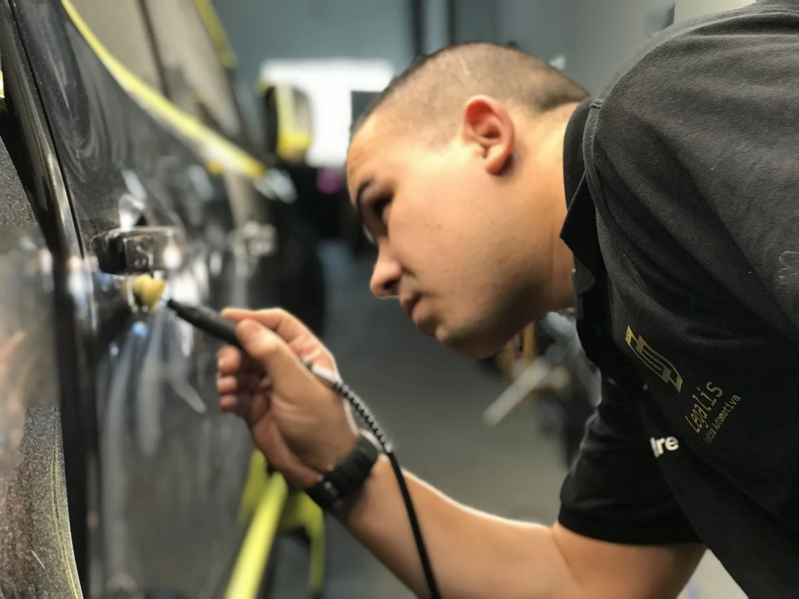
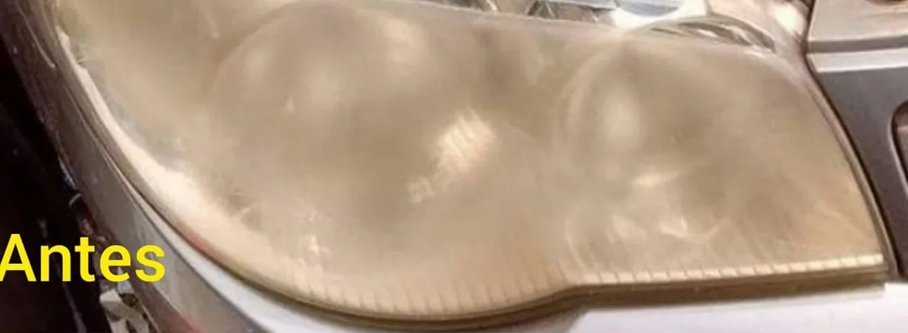

Polimento técnico
Para tratar imperfeições reversíveis da pintura, recuperar o brilho e valorizar o acabamento original.
Consultar este serviçoEstética automotiva na Vila Formosa, em São Paulo. Da pintura ao interior, a Legalis avalia o que o seu carro precisa e cuida dele com técnica, atenção e respeito pela sua história.

Ele acompanha histórias, conquistas e a rotina de quem está ao volante.
Na Legalis, o trabalho começa com uma conversa. O fundador Alexandre e a equipe entendem o estado do veículo, explicam as possibilidades e indicam o tratamento mais adequado para conservar, proteger e valorizar cada superfície.
É um cuidado técnico feito por pessoas que realmente gostam do que fazem — e que sabem como é bom olhar para o carro e sentir orgulho de novo.
Conheça nosso jeito de cuidarNão existe tratamento único para todos os carros. Encontre o que faz sentido para o seu momento e converse com a equipe antes de decidir.
Para tratar imperfeições reversíveis da pintura, recuperar o brilho e valorizar o acabamento original.
Consultar este serviçoUma camada de proteção para ajudar a conservar a pintura, com efeito de repelência e manutenção mais fácil.
Consultar este serviçoRenove a sensação de estar dentro do carro com uma limpeza criteriosa dos bancos e superfícies internas.
Consultar este serviçoLimpeza detalhada para quem prefere preservar o carro sem abrir mão de um acabamento impecável.
Consultar este serviçoTratamento para devolver transparência ao farol e melhorar a aparência da frente do veículo.
Consultar este serviçoUma solução para pequenos danos localizados, avaliada caso a caso para preservar o máximo da pintura original.
Consultar este serviçoTambém oferecemos cuidados para plásticos, vidros, motor, couro e ar-condicionado. Consulte a disponibilidade de atendimento delivery.
Falar sobre o meu carroO melhor resultado começa antes de qualquer produto ou ferramenta: começa entendendo o que incomoda você e o que o carro precisa.
Agendar uma avaliaçãoVocê conta o que percebe no veículo. A equipe observa as superfícies e conversa sobre suas expectativas.
Explicamos o que pode ser tratado, quais cuidados fazem sentido e como será o processo.
Executamos o serviço com atenção aos detalhes e orientamos você sobre a conservação depois da entrega.
Arraste o controle e veja um registro de restauração de farol publicado pela própria Legalis.

Imagens reais da Legalis. A possibilidade de restauração e o resultado dependem da avaliação de cada farol.
Toque em um serviço para ver suas fotos. Registros da Legalis e imagens ilustrativas são identificados na galeria.
Quem já deixou o carro nas mãos da Legalis conta como foi a experiência. Veja relatos reais, do atendimento ao resultado.
O cuidado aparece em cada detalhe.
E nas palavras de quem viveu a experiência.
“O carro ficou como novo, com um cheiro maravilhoso e tudo muito bem limpo. Atendimento excelente e muito profissional.”
“o farol parece novo sem exagero...fiquei muito contente com o serviço e recomendo”
“Serviço de qualidade, equipe super atenciosa e o Alexandre excelente profissional.”
“Fiz a higienização completa do carro, ficou impecável, acabamento interno perfeito, brilhoso por fora, fora o cheiro de carro novo!”
“Todo processo foi explicado para mim e a entrega foi ainda melhor que o prometido.”
“Foi fácil e rápido pra agendar. Ótimo atendimento pelo whats e presencial.”
“O atendimento é excelente e extremamente profissional do início ao fim.”
“Me surpreenderam positivamente. Super recomendo!”
“O Alexandre foi pontual e no atendimento foi muito simpático. Em relação ao serviço, o resultado foi ótimo.”
“O resultado ficou fantástico. Voltou a originalidade o farol do carro.”
“Profissional qualificado, pontual e muito eficiente! O serviço ficou ótimo!”
“Mandou vídeos e fotos de todos os procedimentos, literalmente meu carro pareceu que saiu da concessionária.”
“Deixaram meus farois praticamente zerado, como se fosse novo.”
“preço justo e estou extremamente satisfeito com o resultado”
Passe o cursor para pausar. No celular, use o botão acima para ler com calma.
Conteúdos publicados no site original para quem gosta de entender o cuidado por trás de cada resultado.
Conheça a publicação da Legalis sobre proteção e cuidado da pintura.
Ler no blog originalVeja a publicação da empresa sobre o tratamento de faróis.
Ler no blog originalA avaliação ajuda a indicar o caminho mais adequado para seu carro.
Envie uma mensagem contando o que incomoda você. A equipe pode orientar o próximo passo e, quando necessário, avaliar o veículo pessoalmente antes de recomendar o tratamento.
Não. O polimento trata imperfeições reversíveis da camada de verniz. Riscos mais profundos precisam de outra avaliação, e a Legalis explica o que é possível antes de começar.
Não. Ela ajuda a proteger a pintura e facilita a manutenção, mas o veículo continua precisando de lavagens e cuidados corretos.
Sim. O atendimento no estúdio é com hora marcada. Chame no WhatsApp para combinar o melhor momento.
O site atual da empresa informa disponibilidade de alguns serviços em delivery. Consulte a equipe sobre o serviço desejado e sua região.
Conte para a Legalis o que você gostaria de melhorar. O primeiro passo é uma orientação honesta, feita por quem entende de cuidado automotivo.